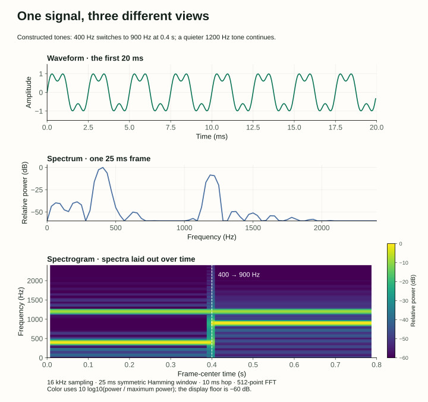
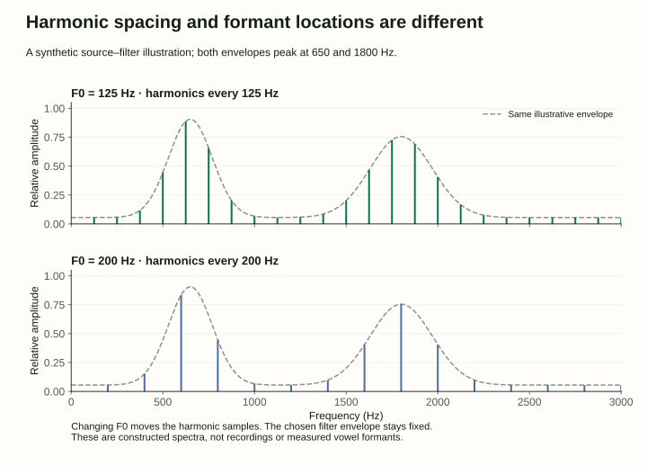
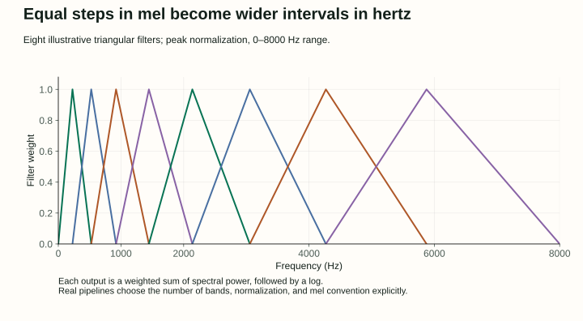

15 / The bridge from speech to computation
Speech Features: From Moving Air to a Matrix of Numbers
A microphone does not output words, phonemes, or a spectrogram. It measures a changing signal. A speech system needs a sequence of deliberate transformations before that signal becomes a useful input to a model.
This is an original companion to Chapter 15: Phonetics and Speech Feature Extraction in Jurafsky and Martin’s August 19, 2026 draft. We connect the chapter’s articulatory and acoustic descriptions to explicit signal calculations. Every plotted signal below is synthetic; no curve is presented as a recording of a person.
1. Letters, phones, and phonemes answer different questions
A written letter is a symbol in an orthography. A phone describes a speech sound. A phoneme describes a language’s contrastive sound category: replacing one with another can change a word. A phonetic transcription therefore represents pronunciation, while an ordinary transcript records words according to a writing system.
English spelling makes the distinction visible. The word ship has four letters but can be transcribed with three phones, [ʃ ɪ p], or the ARPAbet sequence SH IH P. The International Phonetic Alphabet supports phonetic description across languages. ARPAbet uses ASCII labels for a set of English sounds. Neither is the same thing as the subword vocabulary of a text language model.
A pronunciation dictionary gives possible pronunciations of word types. An aligned phonetic corpus describes particular recorded occurrences, often with start and end times. Fast speech, dialect, neighboring sounds and speaking style can change the realization. A boundary written at 0.42 seconds is an annotation decision, not evidence that the vocal tract abruptly switches between independent sound files at that instant.
Describe a consonant with three coordinates
Place says where the airflow is constricted. Manner says how: a closure, a narrow turbulent passage, a nasal route, or a relatively open approximation. Voicing describes vocal-fold vibration. We need all three to distinguish familiar pairs:
| Sound | Place | Manner | Voicing |
|---|---|---|---|
| P / B | Both lips | Stop | Voiceless / voiced |
| T / D | Alveolar ridge, behind upper teeth | Stop | Voiceless / voiced |
| F / V | Lower lip and upper teeth | Fricative | Voiceless / voiced |
| M / N / NG | Lips / alveolar ridge / velum | Nasal | Ordinarily voiced in English |
A stop combines a closure with a release; a fricative produces turbulence through a constriction. Lowering the velum lets air flow through the nasal cavity. These physical differences motivate acoustic expectations: a closure may have low energy, a release may have a burst, and a fricative may have irregular high-frequency energy. Context and recording conditions prevent these from becoming infallible labels.
For vowels, describe height, frontness or backness, and lip rounding. In broad English examples, the vowel of beet is high and front, while the vowel of boot is high, back and rounded. A diphthong changes quality during its production. A syllable groups an onset, a nucleus and an optional coda; in map, M is the onset, AE the nucleus, and P the coda. The nucleus plus coda is the rime. Languages differ in which combinations are permitted: these constraints are called phonotactics.
2. The same words can carry different prominence and phrasing
Prosody concerns timing, rhythm, prominence and intonation. Compare “Maya borrowed the bike” with prominence on Maya, borrowed, or bike. The word sequence stays fixed while the implied contrast changes. A speech recognizer that produces only words discards part of this signal; a speech synthesizer must decide how to realize it.
Lexical stress concerns a word’s pronunciation pattern. Pitch accent is prominence assigned in an utterance, typically realized on an eligible stressed syllable. They are related but not interchangeable. Unstressed vowels may reduce toward schwa, but lack of stress does not require reduction. Phrase boundaries can involve pauses, lengthening and pitch movements, and need not coincide perfectly with written punctuation.
Three useful acoustic measurements are duration, energy and fundamental frequency F0. F0 measures repetition rate in a voiced signal and is related to perceived pitch; energy is related to loudness. Perception also depends on other factors. A rising contour can help signal a question in some English contexts, but “every question rises” is not a rule for all utterances or languages. Systems such as ToBI annotate pitch accents and boundary tones explicitly.
An F0 tracker needs a voicing decision. A gap in the track during an unvoiced fricative is not a zero-hertz musical note. Autocorrelation can estimate repetition by comparing a signal with shifted copies of itself; zero lag is trivially strong, so a tracker searches appropriate nonzero lags and handles octave ambiguities rather than blindly choosing the largest value.
3. Sampling discretizes time; quantization discretizes amplitude
A microphone converts pressure variation into an electrical signal. Sampling records its value at times n/fs, where fs is the sample rate in samples per second. Quantization rounds those values to a finite set. A 16 kHz recording contains 16,000 samples per second; 16-bit linear PCM offers 65,536 integer levels. These are independent choices.
One second of mono, 16 kHz, 16-bit PCM needs 16,000 × 2 = 32,000 bytes of sample data, before headers or compression. Stereo doubles that count. A container such as WAV describes how to interpret the stored data; not every WAV file uses the same encoding. The chapter also introduces μ-law, which applies a nonlinear companding curve before quantization to allocate amplitude resolution differently.
For a cosine x(t) = cos(2πft), sampling gives x[n] = cos(2πfn/fs). If fs = 8000, frequencies 6000 and 2000 Hz produce identical samples:
= cos(2πn − 2π · 2000n/8000)
= cos(2π · 2000n/8000), for integer n.
This is aliasing: distinct continuous signals become indistinguishable after sampling. The Nyquist frequency is fs/2. Ideal reconstruction assumes a band-limited signal strictly below that boundary, with enough samples and the corresponding reconstruction procedure. An anti-alias filter removes unwanted high-frequency content before sampling or downsampling. Changing a file’s sample-rate label does not perform that filtering or create new measurements.
The dots show measurements of a unit-amplitude, zero-phase cosine. The continuous curves are known here because we invented the signal. Scroll the plot horizontally on a narrow screen.
Raise the sample rate to 16 kHz and the 6 kHz tone falls below Nyquist. That prevents this ambiguity for a suitably band-limited input; it does not restore frequencies already lost in an 8 kHz recording. At exactly half the sample rate, a zero-phase cosine alternates signs, while a sine with the same frequency can be sampled only at its zero crossings. This boundary example is why “two samples per cycle” needs a careful qualification.
4. A waveform, a spectrum, and a spectrogram have different axes
A waveform plots amplitude against time. Averaging signed samples is a poor measure of signal strength because positive and negative values cancel. For N samples, mean square is Σx[n]²/N, RMS amplitude is its square root, and unnormalized frame energy is Σx[n]². These digital quantities need calibration before they become physical pressure or sound-pressure level.
For the eight samples x[n] = cos(2πn/8) + 0.5cos(4πn/8), the energy is 5, mean square is 0.625, and RMS is about 0.790569. Doubling every amplitude multiplies energy by four. It adds 10log10(4) ≈ 6.02 dB to a power ratio. A dB value always needs a reference; the figures below use the maximum power in the plotted signal, not an auditory threshold.
A spectrum describes frequency content within an analyzed interval. The discrete Fourier transform computes complex coefficients that retain magnitude and phase:
Frequency of bin k: kfs/N; raw spectral power: |X[k]|².
In our eight-sample example, the unnormalized DFT has magnitudes 4 at bins 1 and 7, and 2 at bins 2 and 6. The paired bins are the positive- and negative-frequency components of real cosines. A plotted one-sided amplitude or power spectrum may apply additional scaling; specify the convention before comparing heights.
A spectrogram repeats the analysis across overlapping frames and displays time, frequency and power together. In the next figure, one synthetic tone changes frequency while another stays fixed. Nothing in this signal is a word or vowel; the construction isolates what the axes mean.

Harmonics come from repetition; formants come from resonances
A periodic voiced source produces harmonics at integer multiples of F0. The vocal tract emphasizes and suppresses frequency regions. Its resonances produce the spectral envelope’s formants, commonly labeled F1, F2 and so on. A formant is not “the second harmonic,” and F2 does not mean twice the pitch.
The source–filter model separates these roles approximately: source excitation passes through a filter describing the vocal tract. A speaker can change pitch while maintaining a similar vowel configuration, or change the vowel while keeping a similar pitch. In actual speech, both evolve over time; formant values also vary across speakers and contexts.

5. Frame size and hop size control different things
Speech changes over time, so we analyze short intervals that are approximately stationary. Frame size determines how much signal contributes to one analysis; hop size determines the spacing between analyses. They do not need to be equal.
At 16 kHz, a 25 ms frame contains 400 samples, and a 10 ms hop advances 160 samples. Consecutive frames overlap by 240 samples, or 15 ms. With exactly 16,000 samples and no centering or end padding, complete frames start at 0, 160, …, 15,520:
Last frame covers sample indices 15,520 through 15,919.
The remaining 80 samples do not form another complete frame. Padding could retain them, but would create a different frame count. A recording shorter than one frame produces zero complete frames under this convention. These small choices explain many apparent disagreements between feature extractors.
A rectangular crop cuts off the frame sharply. Multiplying by a taper such as a Hamming window reduces boundary discontinuities and changes spectral leakage. Our figures use the symmetric definition w[n] = 0.54 − 0.46cos(2πn/(L−1)), for 0 ≤ n < L. The endpoints equal 0.08, not zero. Periodic-window definitions use a different denominator; specify which one you implement.
We zero-pad the 400 windowed samples to a 512-point FFT. The positive-frequency bin spacing becomes 16,000/512 = 31.25 Hz, with 257 bins including DC and Nyquist. Zero-padding evaluates the same finite frame’s spectrum more densely; it does not create the resolving power of a longer observed signal. Longer frames improve frequency discrimination but can blur rapid temporal changes.
An FFT is an efficient way to compute a DFT. A power-of-two size is a useful implementation choice, not a mathematical requirement for every FFT algorithm. For example, SciPy’s FFT documentation describes support for other lengths. Match the window length, FFT length, hop, centering and scaling when reproducing features.
6. Log-mel features pool frequency bins before taking logs
The chapter’s mel mapping is m(f) = 1127ln(1 + f/700). Equal steps on this scale correspond to increasingly large steps in hertz. A mel filter bank uses overlapping frequency weights, often triangular, to pool spectral power. This is a modeling choice inspired by hearing, not a complete simulation of auditory perception.

For frame t and band m, compute Et,m = Σk Hm,k|Xt,k|², then log(max(Et,m, ε)) with a positive floor ε. H contains the filter weights. The log is applied after pooling power; averaging log powers is a different operation.
To isolate the arithmetic, use four invented power values [1, 4, 9, 4] and two miniature filter rows [0.5, 1, 0.5, 0] and [0, 0, 0.5, 1]. These rows illustrate weighted pooling, rather than reproducing the full mel-spaced bank above:
E₂ = 0.5×9 + 1×4 = 8.5
Natural-log features ≈ [2.197225, 2.140066].
With 98 frames and 80 filters, one second becomes a 98 × 80 time-by-band matrix under our convention. “80 channels” here means 80 feature bands, not 80 microphones. A neural model can then learn patterns across time and bands; some architectures instead learn their front end directly from waveform samples.
Logging compresses dynamic range but does not remove gain. Multiplying the waveform by a adds 2ln|a| to every unfloored log-power band. Feature normalization is a separate operation. Record whether its statistics come from training data, an utterance or a running window; training-set statistics must be estimated without test leakage. Also record log base, floor and clipping, since those alter the resulting numbers.
7. MFCCs summarize the log-mel shape with a cosine transform
Mel-frequency cepstral coefficients apply a transform across a frame’s log-mel bands. A common implementation uses an orthonormal type-II discrete cosine transform, then keeps a chosen number of coefficients. This is distinct from keeping the first few frequency bands: each coefficient combines information from the whole log-mel vector.
α₀ = √(1/M); αq>0 = √(2/M).
For band energies [1, 2, 4, 8], the natural-log vector is [0, ln2, 2ln2, 3ln2]. Its four coefficients are approximately [2.079442, −1.546025, 0, −0.109873]. The first is half the sum of those four log values. Retaining all four coefficients preserves that vector under an invertible transform; discarding coefficients loses detail.
The cepstral intuition separates slowly varying spectral-envelope structure from fine harmonic structure. It is useful, but does not guarantee a perfect separation of speaker, pitch and phone identity. Phase was already discarded by using spectral power, and mel pooling already removed detail. Consult the librosa MFCC documentation for concrete choices of DCT type, normalization and output coefficient count; its defaults are not a universal definition.
The chapter describes a classic 39-feature recipe: 12 cepstral values plus energy, then 13 temporal deltas and 13 delta-deltas. That is one configuration. Energy is not automatically identical to the zeroth cepstral coefficient, and modern feature pipelines may use different counts or log-mel features directly.
Deltas estimate change across frames. A common centered regression estimate is Δct = Σn=1…K n(ct+n − ct−n)/(2Σn=1…Kn²). For K = 1 and neighboring values [2, 3, 6], the delta at the middle frame is (6−2)/2 = 2 per frame. A centered estimate uses future frames, so a streaming system must account for that lookahead or use another convention. Delta-deltas apply a temporal change operator again; edges need a padding policy.
8. Check the representation before training the model
A useful feature specification names the sample rate and encoding, channel handling, amplitude scaling, frame and hop sizes, window definition, padding, FFT normalization, filter bank, log rule and feature normalization. Two arrays with the same shape can encode different signals if those conventions differ. A model cannot repair every mismatch simply because its input tensor has the expected dimensions.
Does increasing bit depth prevent frequency aliasing?
No. Bit depth changes amplitude quantization. Aliasing comes from time sampling and insufficient band limiting. The two need different remedies.
Does doubling F0 require doubling every formant frequency?
No. F0 sets harmonic spacing; formants describe vocal-tract resonances. Figure 2 keeps the envelope fixed while changing the harmonic grid.
Why are there 98 frames instead of 100 in the one-second example?
The hop is 10 ms, but each frame needs 25 ms of samples. With no padding, the final full frame starts at 970 ms. The next start would require samples beyond the recording.
Does padding a 400-sample frame to 512 samples add observed speech?
No. It adds zeros and samples the finite frame’s spectrum on a denser grid. It does not increase the duration of observed signal.
Are a spectrogram and a phonetic transcription interchangeable?
No. A spectrogram displays measured frequency content over time; a transcription assigns linguistic sound labels. Relating the two requires analysis, annotation or a learned model.
Reproduce the calculations and continue reading
Run speech-features-example.py with Python’s standard library to verify all 58 sampling settings, frame counts, the small DFT, pooling and DCT examples. speech-features-figures.py generates the three original figures using NumPy and Matplotlib. Their constructed signals make the plots inspectable without presenting invented measurements as speech data.
Read the source’s §§15.1–15.3 for transcription, articulation and prosody; §15.4 for acoustic analysis and source–filter structure; §15.5 for log-mel extraction; and §15.6 for the classic MFCC recipe. This companion makes sampling assumptions and implementation conventions explicit, and distinguishes harmonic frequencies from formant resonances. The next chapter asks how a model maps these time-varying inputs to a sequence of recognized tokens.